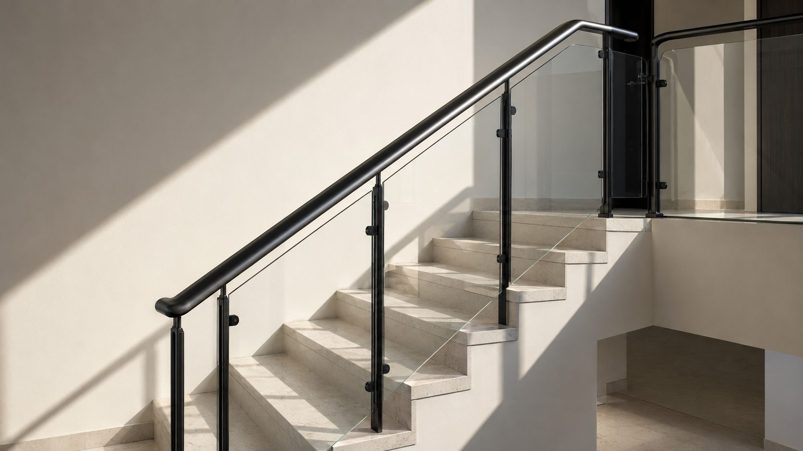
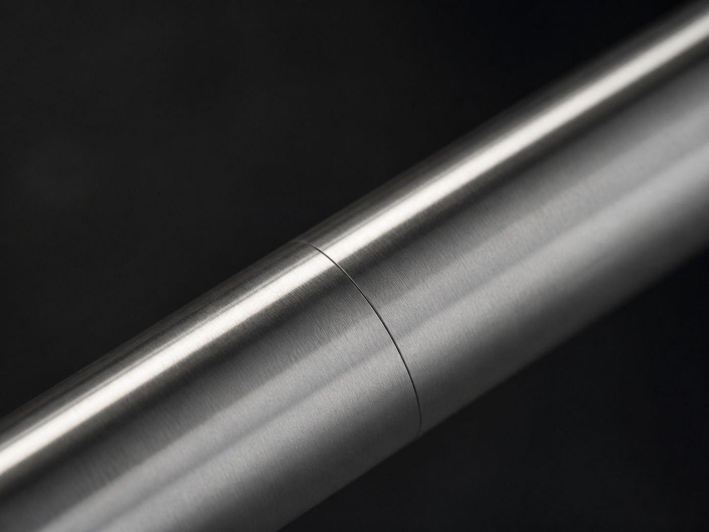
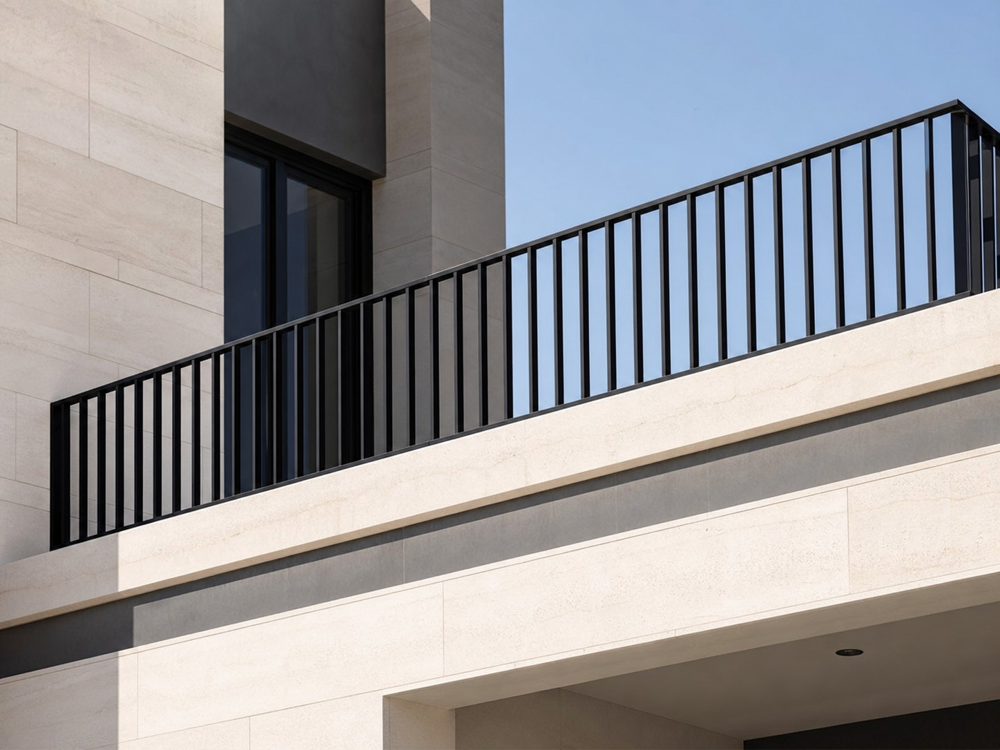

الخدمات · الدرابزينات والحواجز
الأمان لا يجب أن يبدو مؤقتًا
درابزينات للدرج والشرفات والتراسات والمسابح — إنشائية حيث يجب، وهادئة حيث تُرى.

مقبض قطر ٤٢ ممما نبنيه
أنواع الدرابزينات
درابزينات الدرج
قلبات مستقيمة ودوّارة ومنحنية. مقبض متصل بنهايات نظيفة.
الشرفات والتراسات
درابزينات خارجية مطلية لتعرض دائم للشمس والرطوبة.
زجاج وحديد
تعبئة زجاج مقسّى مع قوائم حديد أو ستانلس، أو تثبيت بمجرى بأقل عناصر ظاهرة.
حافة المسبح والسطح
مواقع حرجة من ناحية التآكل. مواصفة ستانلس أو درجة بحرية.
٠١ / المناخ · ٠٢ / الانسجام مع المبنى
الخامة تتبع الموقع
درج الداخل يمكنه استخدام حديد طري مطلي بالبودرة إلى ما لا نهاية. أما شرفة تواجه البحر فلا. ودرابزينات المسابح تعيش في رطوبة مكلورة وتحتاج ستانلس بالدرجة الصحيحة — و٣٠٤ ليس كافيًا دائمًا قرب الملح.
نحدد المواصفة وفق الموقع لا وفق التفضيل، ونذكر ذلك في العرض. وحين يُستخدم الزجاج، نحدد سماكته وتقسيته وطريقة تثبيته — وهي ما يقرر بقاءه صلبًا.
بصريًا، الهدف درابزين تتوقف عن ملاحظته حتى تدقق النظر: تباعد قوائم منتظم، ونهايات متسقة، ولحامات مسوّاة، وتثبيت مخفي.

لحام مسوّى بالسطح
مسافة القوائم ١٢٠٠ مم٠٣ / الموثوقية · ٠٤ / التركيب
الدرابزين عنصر أمان
الارتفاع وفراغ التعبئة ومقاومة الحمل ليست خيارات شكلية. نبني وفق ارتفاعات وفراغات معتمدة، ونثبّت في الهيكل الإنشائي — لا في البلاط أو اللياسة أو طبقة التسوية.
كل عرض يحدد مقاسات القطاعات وطريقة التثبيت ونوع المسامير، ونظام الطلاء، ومدة الضمان. ويشمل التركيب تثبيتًا بالحفر الأسطواني أو بألواح قاعدة، وحماية الأرضيات المنتهية، وفحص تحمّل قبل التسليم.
أرسل طول المسار والارتفاع.
صورة للدرج أو الشرفة مع مقاسات تقريبية تكفي لمواصفة أولى.
اطلب سعر درابزين →